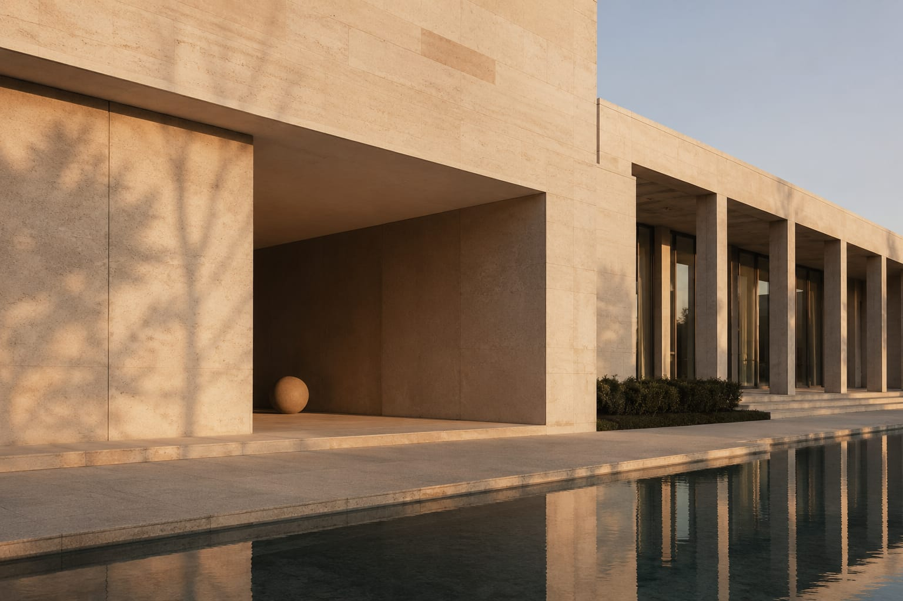
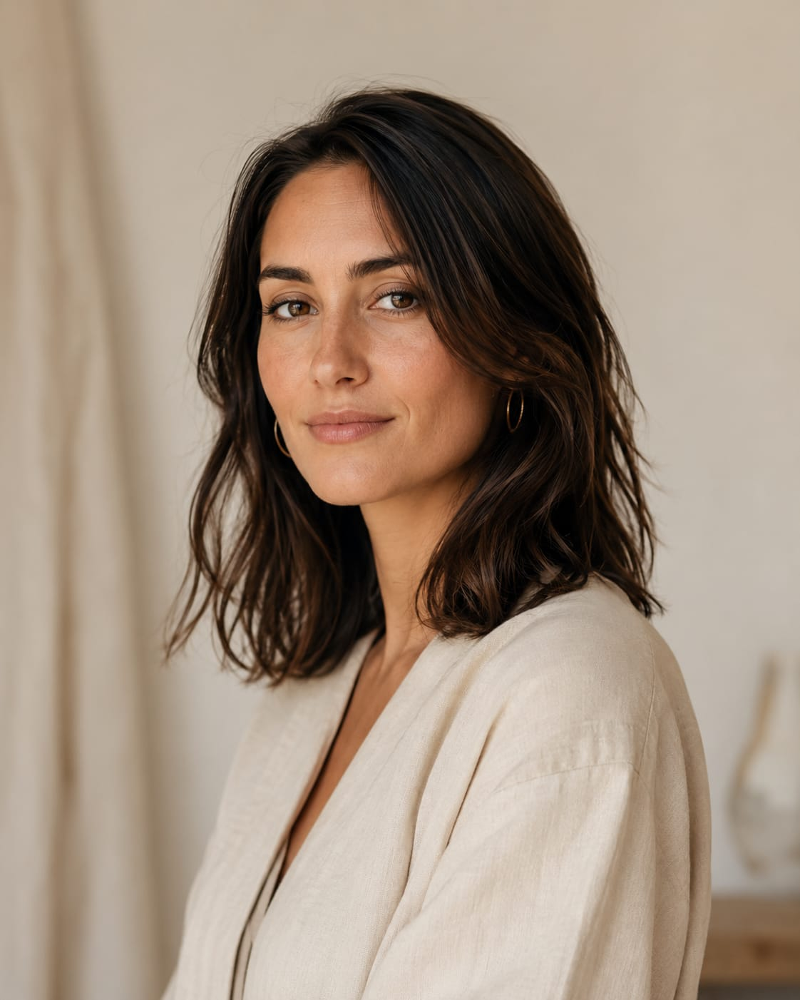
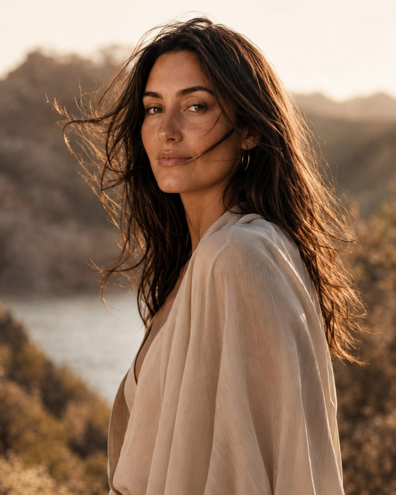
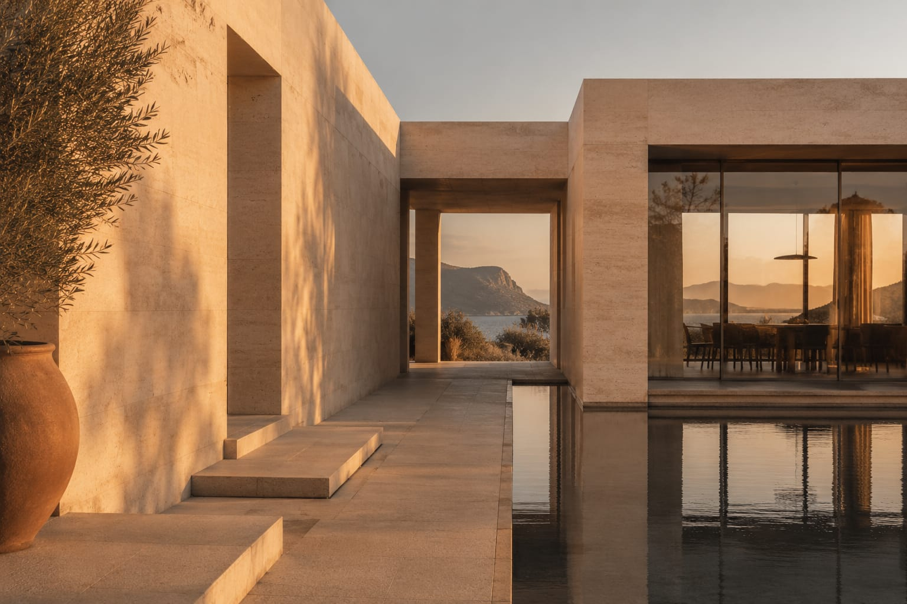
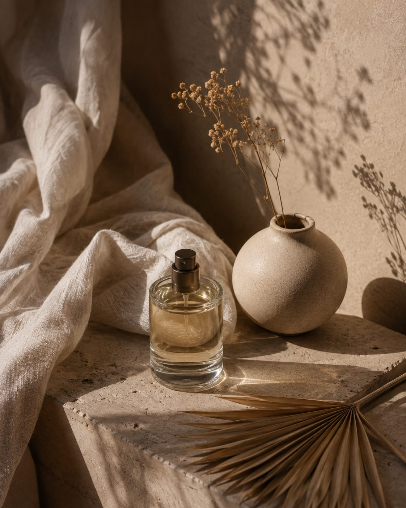
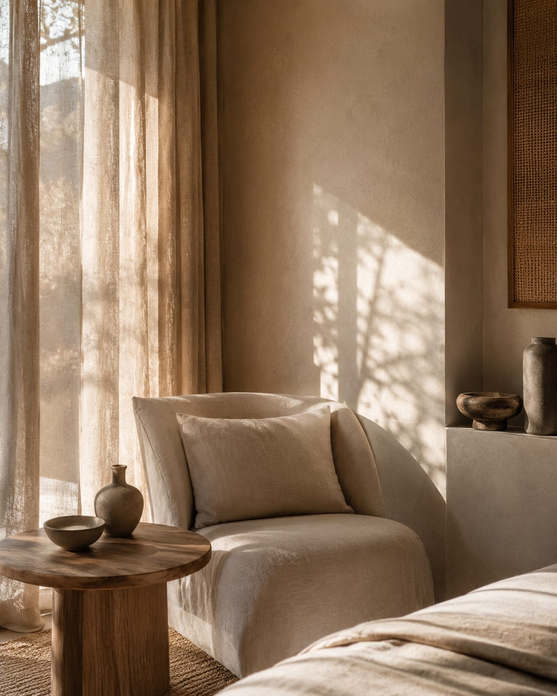
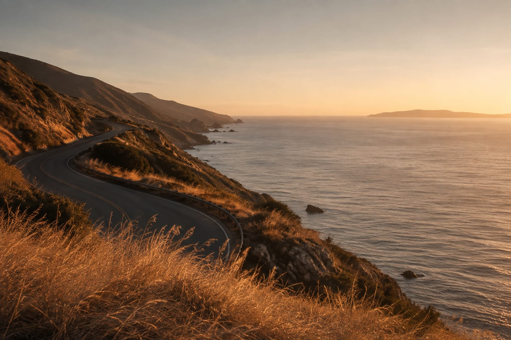
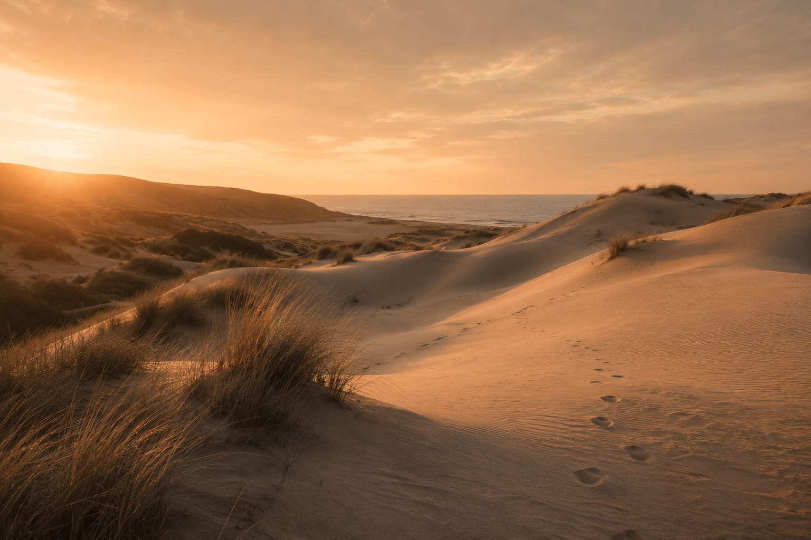
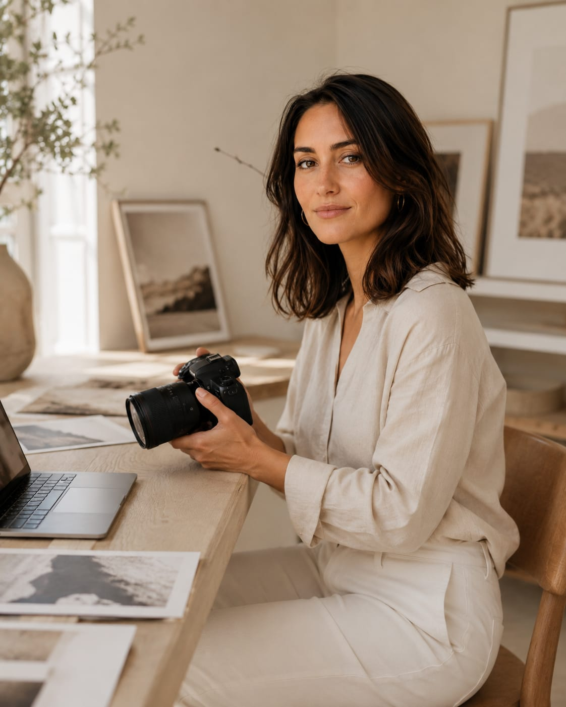

Fotógrafa profesional · Buenos Aires, Argentina
Retratos con presencia, arquitectura con carácter.
Soy Martina Duarte. Hace más de 10 años cuento historias a través de la cámara, para marcas, estudios de arquitectura y personas que quieren un retrato que se sienta real.
experiencia
entregados
estudios
editoriales
Trabajos seleccionados
Una selección de proyectos recientes
Cada trabajo empieza con la misma pregunta: qué quiere decir esta marca, este espacio o esta persona. La luz y el encuadre vienen después.

Casa Travertino
Sesión de arquitectura para un estudio de diseño, foco en materialidad y luz natural.

Serie Estudio
Retratos corporativos para perfiles profesionales y equipos de trabajo.
Serie Horizonte
Producción editorial en exteriores para una marca de indumentaria natural.

Serie Viento
Retrato editorial en exteriores, con luz de atardecer y dirección de arte minimalista.

Villa Egeo
Producción arquitectónica en una villa de piedra travertino, para un estudio de diseño mediterráneo.

Bodegón en Luz Natural
Fotografía de producto y still life con luz natural para el lanzamiento de una fragancia.

Interior Serie Calma
Cobertura de interiorismo para un estudio de diseño, foco en texturas naturales y luz filtrada.

Ruta al Amanecer
Editorial de paisaje sobre la costa, parte de una producción para una marca de indumentaria outdoor.

Dunas al Atardecer
Producción de paisaje costero para una editorial de viajes, luz dorada y composición minimal.

Detrás de cámara
Proceso de selección y edición de una producción de paisaje.
Sobre mí
Fotógrafa de retrato y arquitectura, con base en Buenos Aires
Me llamo Martina Duarte. Empecé fotografiando amigos con una cámara prestada y hoy trabajo con estudios de arquitectura, marcas de indumentaria y medios editoriales que buscan imágenes con identidad propia.
Estudié Fotografía en la Universidad de Buenos Aires y me especialicé en retrato natural e interiorismo. Desde 2014 desarrollo proyectos propios y encargos para clientes que valoran la luz natural, la composición cuidada y una dirección de arte con criterio.
Mi trabajo combina la sensibilidad del retrato editorial con la precisión técnica que exige fotografiar arquitectura: entender un espacio o una persona antes de levantar la cámara.
Cómo trabajo
De la idea a la entrega final
Brief y referencias
Charlamos sobre el objetivo de la sesión, el tono visual y las referencias que te representan.
Locación y luz
Elijo la locación, el horario y el equipo según la luz natural disponible ese día.
Producción
El día de la sesión dirijo cada toma para que el resultado se sienta natural, no forzado.
Selección y entrega
Selecciono, edito y entrego en alta resolución, con una preview online para revisar juntas.
Servicios
Sesiones a medida de cada proyecto
Retrato editorial
Sesiones individuales o para equipos, en estudio o exteriores, con dirección de arte incluida.
Desde USD 180Arquitectura e interiores
Cobertura de espacios, obras y proyectos de diseño para estudios y desarrolladoras.
Desde USD 320Editorial para marcas
Producciones de campaña con moodboard, casting y locación gestionados de punta a punta.
A consultarBackstage & eventos
Registro documental de procesos creativos, lanzamientos y eventos de marca.
Desde USD 150Testimonios
Lo que dicen quienes trabajaron conmigo
¿Tenés un proyecto en mente?
Contame de qué se trata y te respondo con disponibilidad, presupuesto orientativo y los próximos pasos.
EscribimeContacto
Coordinemos tu próxima sesión
Contame sobre tu proyecto, el tipo de sesión que necesitás y las fechas que tenés en mente. Te respondo dentro de las 48 horas.
-
Teléfono+54 9 11 4000 1122
-
UbicaciónBuenos Aires, Argentina